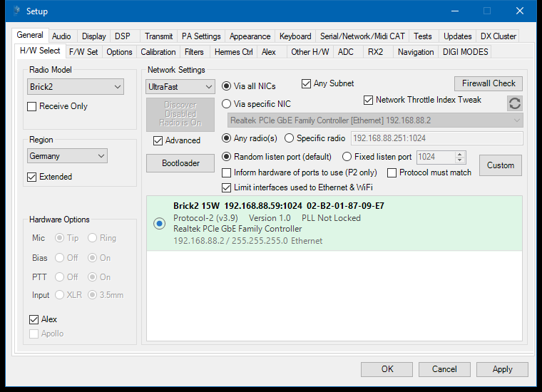
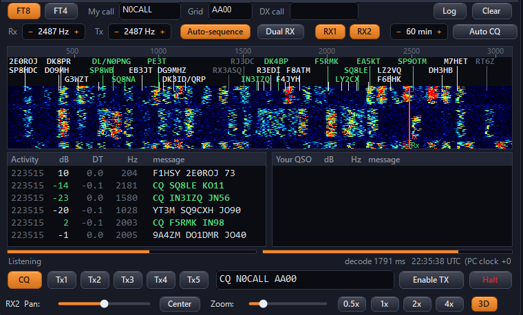
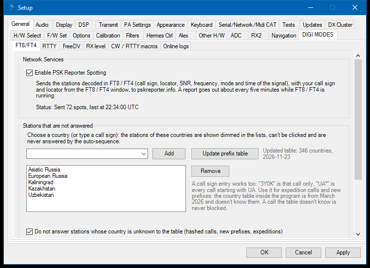
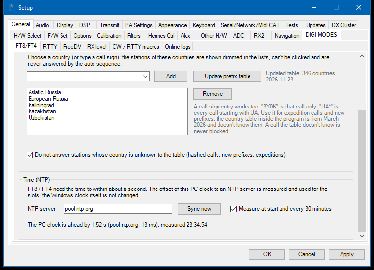
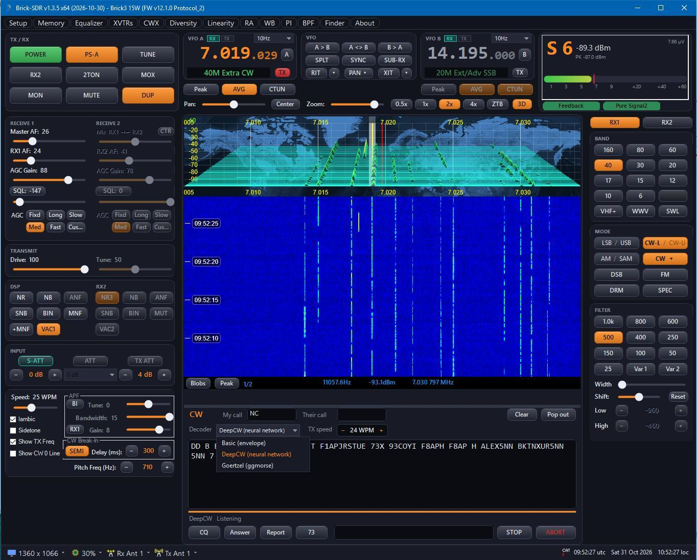
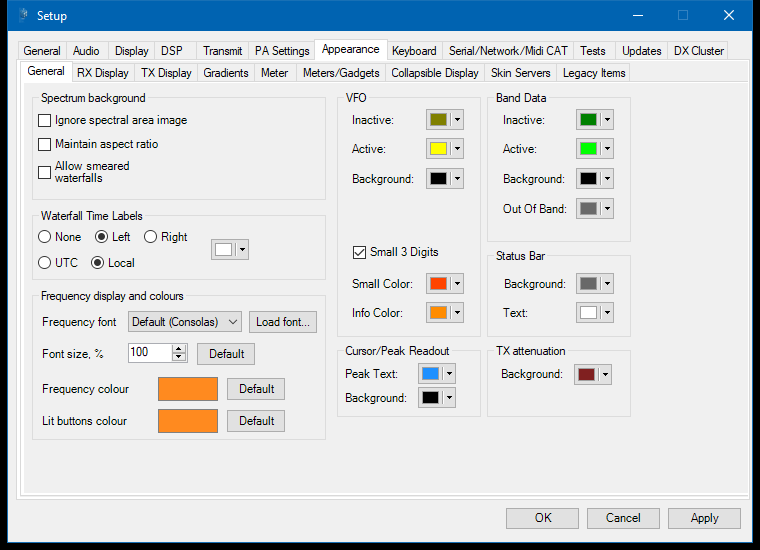

Brick-SDR is a restyled fork of Thetis 2.10.3.x, the SDR console for OpenHPSDR / ANAN / Hermes Lite 2 radios, with a new dark interface, automatic Brick2 / Brick3 detection, the official WDSP 2.11 (including the new NNR noise reduction) and built-in digital modes: FT8 / FT4 with Auto CQ, CW, RTTY and FreeDV.
Version 1.4.7 · 23 November 2026 · GNU GPL v2 · Windows, .NET Framework 4.8, x64
github.com/linoobs/Brick-SDR-Software
FT8 / FT4 Auto CQ with a timer: the program calls CQ, answers callers, logs the QSOs and calls CQ again without an operator — section 4.2.
Time from an NTP server for the FT8 / FT4 slots (Setup → DIGI MODES) — section 4.3.
Appearance: accent colour applied live, frequency font, size and colour — section 8.1.
Brick2 and Brick3 are entries of the radio model list — section 2.
Keep my tuning step remembers the step of each mode — section 3.
1. Installation
If an older version (1.3.x or earlier) was installed with the previous installer, uninstall it first (Windows Settings → Apps → Brick-SDR). The settings stay in %APPDATA%\OpenHPSDR\Brick-SDR-x64.
Download BrickSDR-Setup_<version>.msi from the Releases page and run it. Administrator rights are needed: the program goes to Program Files and a Windows Firewall exception is added for it.
Start Brick-SDR from the Start menu or the desktop shortcut.
The package installs to C:\Program Files\Brick-SDR, adds the shortcuts and the firewall exception and sets the graphics preference to the high performance GPU. A newer .msi updates the installed version. Silent install: msiexec /i BrickSDR-Setup_<version>.msi /qn.
The installer is not code-signed: SmartScreen may show an unknown-publisher warning (More info → Run anyway). Every release carries VirusTotal_url.txt with the VirusTotal report of that file.
Updates
The program checks GitHub for a newer release (a notice in the status bar). A window shows the change log with one Download and install button; the program updates itself and restarts. Controls: About → Check for updates and Setup → Updates (on / off, Check now, Skip this version).
2. First start and connecting the radio
Setup → General → H/W Select → Discover. The radios found are listed; add one to the list.
Brick2 (14-bit 15 W / 50 W, 16-bit) and Brick3 are recognised by their MAC address. S-meter calibration and the PA profiles are loaded once per radio. Other boards (Hermes Lite 2, Hermes, Angelia, Orion, Saturn ...) are identified by the board id of the discovery.
Press the Power button to connect. The title bar shows the radio model and firmware, the status bar the link speed.

Setup → General → H/W Select: model Brick2, the radio found by Discover (green = connected), Alex ticked, Apollo greyed out.
Radio model list (Brick2 / Brick3)
Since 1.4.7 Brick2 and Brick3 are entries of the Radio Model list. They are a Hermes and an ANAN-100D underneath, so all the settings of those models apply. For these two models Alex is ticked and Apollo is greyed out and unticked (these boards have no Apollo). The model is set by itself when a Brick board is connected; choose it by hand only to prepare the settings without a radio.
Firmware and IP address
In the radio list of H/W Select the buttons Program (firmware upload, also to the bootloader) and IP Set (static IP address, 0.0.0.0 = DHCP) are available. Firmware programming is for experienced users: keep a separate programmer at hand and never interrupt the upload.
3. Main window
The main window with FT8 on 80 m (receive only). Top: menus, VFO A / VFO B, meters; left: receive and transmit controls; centre: RX1 (orange frame) and RX2 (green frame) displays with the FT8 window below; right: band, mode and filter.
Top bar: menus, the VFO A / VFO B boxes, the S-meter / power / SWR meter, Power, MOX, TUNE and the Drive and Tune power sliders.
Left column (Receive / Transmit): AF, RF (right click = auto AGC, the knob turns green), mic, RX EQ, MIC HW / MIC VAC (the TX audio source: the radio microphone, green, or VAC, blue) and the mode specific panels (SSB, CW, FM, digital). In CW the Zero beat button is shown.
Right column: bands, modes (pairs LSB/USB, CW-L/CW-U, AM/SAM, DIGL/DIGU), filters, AGC buttons and the DIGI drop-down. The arrows at both sides of the displays fold the left and the right column away; the state is remembered.
Displays: panadapter and waterfall for RX1 (orange frame) and RX2 (green frame) with an independent spectrum / waterfall splitter for each receiver. Buttons beside Zoom: 3D (per receiver) and DXC (DX cluster spots).
Window size: from 1280 × 721 up to the size of the monitor; the layout scales (compact mode). The digits of VFO A and VFO B always have the same size, whatever the band.
Mute (right click on MUTE = mute all) and the TX levels strip (MIC, EQ, LVLR, CFC, COMP, ALC; right click on the meter to show or hide it) are under the panadapter.
Tuning with the mouse
A left click on the waterfall or the spectrum (outside the visor, the top strip and the dB scale) tunes to the nearest station (LSB: upper edge, USB: lower edge, rounded to 500 Hz). The cursor stays an arrow. The grey strip tunes; the filter edges are not dragged on the panadapter. A right click on the display switches the frequency box at the pointer on and off.
Tuning step
The step follows the mode (SSB 500 Hz, CW / digital 10 Hz, AM / FM 1 kHz). Setup → General → Options → Miscellaneous → Keep my tuning step turns this automatic step off. With it on, every mode remembers the step you chose in it (file tune_step_modes.txt): a change of mode or band brings back the step of the new mode, and a mode that was not used before keeps the current step.
3D spectrum
The 3D button replaces the panadapter with ridges coloured like the waterfall (the waterfall itself stays 2D). The style is chosen in Setup → Display → General: Classic (default), Proportional, Custom (peak height in %). The 0 Hz and band edge lines, the dB scale and the MNF notches follow the 3D perspective; the two-tone IMD readings are shown in 3D too.
RX2, SUB-RX, per band memories
RX1 uses the Thetis band stacks. RX2 has its own band memory, with Pan, Zoom and CTUN per band. With RX2 off, SUB-RX works through VFO B and the RX2 AF slider is its volume.
Menus
The menu bar, the drop-down menus and the status bar are in the Brick-SDR style (flat buttons, the accent colour on hover). The DIGI drop-down offers DIGL, DIGU, FT8, FT4, FreeDV, RTTY and CW (RX2 has the same); the DIGI menu also has Log QSO... and Log bar.
4. Digital modes (DIGI menu)
The digital windows dock under the panadapter and are restored at the next start. They close when the mode changes; the receiver is the one whose DIGI menu opened them. The DIGI menu remembers the dial frequency before a digital mode: LSB / USB returns to it.
4.1 FT8 / FT4

The FT8 / FT4 window. Row 1: mode, call sign, locator, DX call, Log, Clear. Row 2: Rx / Tx audio frequency, Auto-sequence, Dual RX, RX1 / RX2, the Auto CQ time and the Auto CQ button. Below: close-up waterfall, Band activity and Your QSO lists, status line, message buttons Tx1 … Tx5, Enable TX and Halt.
Decoder and encoder: mfsk-core (WSJT-X class sensitivity). The lists show the band activity and your QSO; a click on a line selects the station (DX call, Tx1, slot parity, frequency), a double click or Enter in DX call also enables TX.
Automatic QSO sequencing Tx1 … Tx6. To answer a call type it in DX call and press Enter.
The slot clock is corrected from the DT of the stations heard (and from an NTP server, see 4.3). Early decode passes answer a click + Enable TX in the next slot; CQ uses the soonest slot.
Dual RX: both receivers are decoded into one list (the stations are marked with their band); TX goes out on the receiver whose TX tag (VFO A / B) is lit. The RX1 / RX2 buttons hide a whole receiver display.
FT8 / FT4 put the receiver on the calling frequency of the band, set the filter to 3 kHz and restore the previous filter at the end. The band label shows, for example, 80M FT8.
Stations that are not answered (Setup → General → DIGI MODES → FT8/FT4): countries or call patterns (UA*, 3Y0K) are shown dimmed, cannot be clicked and are never answered. Update prefix table loads Big CTY. The option Do not answer stations whose country is unknown to the table is an extra, stricter rule for hashed calls and new prefixes; the list itself works without it.
The close-up waterfall over the filter band: click = Rx, right click = Tx, click on a call = select.
Non-standard calls (for example /QRP) are answered with the WSJT-X compatible form.
Transmit uses the full audio level; the main Drive slider sets the power, exactly as in CW. After TX with PureSignal on, check the TX ATT value (the auto-attenuate may raise it).

Setup → General → DIGI MODES → FT8/FT4: PSK Reporter spotting and the list of stations that are not answered.
4.2 Auto CQ (no operator)
The Auto CQ button (second row of the FT8 / FT4 window, right) works without the operator: it calls CQ, answers the stations that call, logs every QSO and calls CQ again. Enable TX does not have to be pressed for every round. The box beside the button is the time it may work, in minutes (1 to 1440, remembered). While it runs the button shows the time left.
Starting and stopping
Enter your call sign and locator, put the receiver on DIGU on the FT8 / FT4 frequency, choose the Rx / Tx audio frequency and set the Drive slider as you want it — the program never changes the power.
Set the minutes and press Auto CQ. The auto-sequence is switched on by it. Press the button again, or Halt, to stop at once.
Auto CQ also stops when the timer ends (a QSO in progress is finished first, 2 minutes at most), when the FT8 / FT4 window is closed, when the mode is changed, when the radio is switched off and when the transmitter is un-keyed by hand.
What it does
Situation
Reaction
A station answers the CQ
The normal auto-sequence (report, RR73); the QSO is logged. After RR73 the QSO counts as finished and the next one starts at once, without waiting for the 73.
Stations call while a QSO is in progress
They are remembered (a call is valid for 8 slots, about 2 minutes in FT8). When the partner does not answer after RR73, or after our report went out twice, the farthest of the waiting stations is answered first: great circle distance from your locator to theirs; a station with an unknown locator comes last.
No answer to 5 CQs in a row
The program calls the farthest station that is itself calling CQ (heard in the last 6 slots). With Dual RX on, both bands are searched and the transmission moves to the receiver of that station.
A called station does not answer two calls
It is dropped for this run; the next farthest station is called, or the program goes back to its own CQ when none is left.
Station of a blocked country
Never called and never answered.
The slot of the own CQ stays the same, so every other slot is free for listening. The distance uses the locators in the decoded messages; the call signs and the QSOs worked in the run are kept only until Auto CQ is stopped.
Auto CQ transmits on the air without an operator at the keyboard. Stay near the radio, check the antenna and the Drive setting and respect the rules of your licence. Use it with the antenna connected: into a dummy load nobody can answer.
4.3 Time from an NTP server
FT8 and FT4 need the clock to within about a second. Setup → General → DIGI MODES → FT8/FT4 → Time (NTP) measures the offset of the PC clock to an NTP server (default pool.ntp.org, UDP port 123; the answer with the shortest round trip of five tries is used) and applies it to the slot timing. The Windows clock itself is not changed (that would need administrator rights); the clock in the FT8 / FT4 window is corrected as well.

The Time (NTP) group. The line at the bottom shows the result of Sync now: here the PC clock is 1.5 s ahead.
Sync now measures at once; the line under the button gives the result, for example “The PC clock is ahead by 1.5 s”.
Measure at start and every 30 minutes (on by default) keeps the offset up to date. The server and the option are stored in ntp.txt in the data folder.
The automatic fine adjustment from the decoded stations still works on top of it.
If the Windows time service is not running the clock drifts: use the NTP offset, or start the service (Settings → Time & language → Sync now).
4.4 CW

The CW window with the decoder drop-down (picture of version 1.3.5).
Three decoders can be switched on the fly (Decoder drop-down): Basic (envelope), DeepCW (neural network, ONNX) and Goertzel (port of ggmorse). DeepCW is usually the cleanest. If its model cannot be loaded, the basic decoder is used. Transmit goes through CWX; the macros include the Report macro with your name and QTH (Setup → General → DIGI MODES → CW / RTTY macros).
4.5 RTTY
A terminal with the decoder, the macros and transmit. The mark tone comes from Setup → CAT Control → RTTY Offset; the status line shows the radio frequency of the mark; mark / space markers are drawn on the panadapter. The Drive slider sets the power.
4.6 FreeDV (RADE)
FreeDV RX / TX per receiver, a strip under the panadapter and a settings window, an overlay on the panadapter, meter readings and the FreeDV Reporter (a double click on a station retunes). The receiver is put on the calling frequency of its band.
4.7 Common digital features
Automatic RX level (Setup → DIGI MODES → RX level): lowers the decoder level when the audio clips, raises it when it stays low. The decoder audio does not depend on RX AF or MUTE.
PSK Reporter spotting (off by default; Setup → General → DIGI MODES → FT8/FT4 → Network Services).
Logging: every QSO goes to digi_modes\qso_log.adi and, if enabled, to QRZ.com Logbook, eQSL, Club Log and LoTW (TQSL). The keys are stored encrypted for the Windows user; failed uploads are retried. Without a paid QRZ subscription the QSOs are collected in qrz_manual.adi for a manual import (Setup → DIGI MODES → Online logs).
Log bar under the panadapter (SSB, AM, FM, CW, RTTY by hand): call, report, name, QTH, Save, QRZ.com and Google buttons; look-up while typing (callook.info, HamDB, RadioID, own logs, country table; HamQTH / QRZ XML with log-in). It is hidden while the FT8 / FT4 window is open.
5. DX cluster
Spots are drawn as labels on the spectrum; a click on a label tunes the receiver (VFO B on RX2). The DXC button beside 3D switches them; the settings are in Setup → DX Cluster (a telnet cluster, and the Reverse Beacon Network ports 7000 for CW / RTTY and 7001 for FT8 / FT4). Enter your own call sign for the login.
6. Transmit, PureSignal, safety
PureSignal uses the Thetis 2.10.3.15 algorithm (calcc / iqc), which converged faster in tests than the WDSP 2.11 rewrite. The PIN, MAP, STBL and TINT options work.
The TX leveler is switched on in LSB / USB; the Brick TX profiles have it on.
The ranges of Drive and S-ATT follow the radio model. Drive is stored per band.
The power bar holds the forward power peak (red mark, 1.2 s); the SWR bar has marks at 1.5 (yellow) and 2.0 (red).
The two VFO TX tags are never off at the same time.
Digital modes transmit at full audio level; the Drive slider sets the power. With PureSignal on, check the TX ATT value after FT8 / FT4 transmissions.
7. Hermes Lite 2 and other radios
Hermes Lite 2 support comes from the MI0BOT Thetis version (the same base): HL2 model, drive in dB, I/O board, extended attenuator range, temperature and current in the status bar. It was tested on one board (receive, TUNE at low power). Hermes protocol 1 offers a 384 kHz sample rate (not tried on hardware). Keep-alive packets are sent only after an idle gap.
Other boards are identified by the board id of the discovery. Brick2 and Brick3 have their own entries in the model list (see chapter 2).
8. Display options and appearance
Setup → Display → General: 3D style, line colour modes, spectrum fill colour, Ignore spectral area image (kept between runs). The line mode noise fill colour + WF and the waterfall colours drive the 3D ridges.
Holiday splash screens (world, Ukraine, Germany). Switch them off with an empty file no_holiday_splash.txt in the data folder; preview one with the environment variable BRICKSDR_HOLIDAY=xmas (halloween, newyear, hearts, flowers, radio, eggs, flagua, flagde, nicholas, advent).
8.1 Frequency display and colours

Setup → Appearance → General, the group “Frequency display and colours” (left, below the waterfall time labels).
Setting
What it does
Frequency font
The font of the VFO digits. Load font... adds a font file of your own (it is copied to the data folder).
Font size, %
Size of the digits, 40 to 300 %. VFO A and VFO B always use the same size, whatever the band; a narrow window shrinks both together.
Frequency colour
Colour of the digits of the active VFO.
Lit buttons colour
The accent colour of the whole program: lit buttons, sliders, frames, meters, hover marks. A change is applied at once to all open windows, including Setup. An inactive slider (for example the Tune slider while TUNE does not use it) takes a dimmed shade of the accent.
Default
Each setting has its own Default button.
The settings are stored in appearance.txt in the data folder.
9. Files, troubleshooting, build
User data
Everything is in %APPDATA%\OpenHPSDR\Brick-SDR-x64: the settings database, digital.txt, rade.txt, appearance.txt, ntp.txt, tune_step_modes.txt, the digi_modes\ logs and ErrorLog.txt.
Reporting a problem
Open a GitHub issue with the radio model and firmware, ErrorLog.txt and screenshots of the problem and of the related Setup pages.
Build
In Project Files\Source run MSBuild.exe Console\BrickSDR.csproj -p:Configuration=Release -p:Platform=x64; the result is in Project Files\bin\x64\Release. The installer is built with Installer\build-msi.ps1 (WiX 5). The source of this manual is in docs\manual.
Licence and credits
GNU GPL v2. Based on Thetis (MW0LGE) and PowerSDR; WDSP by Warren Pratt (NR0V); FT8 / FT4 by mfsk-core; DeepCW by e04; ggmorse by G. Gerganov; the HL2 changes by MI0BOT; the RTTY / CW / FreeDV integration after Kainos and Thetis-RADE.
10. Complete change log
v1.4.7
add FT8 / FT4: Auto CQ button with a timer (minutes). It calls CQ, answers callers, logs every QSO and starts the next CQ without an operator; Enable TX does not have to be pressed each time. It stops on Halt, when the timer ends (a QSO in progress is finished), when the window is closed or the mode changes.
add Auto CQ: stations that call during a QSO are remembered. If the partner does not answer after RR73 or after two reports, the farthest caller is answered first (distance from your locator).
add Auto CQ: after 5 CQs without an answer the farthest station that is calling CQ is called (Dual RX searches both bands). A station that does not answer two calls is dropped: the next station, or an own CQ.
add Setup > General > DIGI MODES > FT8/FT4 > Time (NTP): offset of the PC clock to an NTP server (Sync now, automatic at start and every 30 minutes) for the FT8 / FT4 slots and the clock of the window. The Windows clock is not changed.
add Setup > Appearance: accent colour (applied live to all windows), frequency display font (own font files can be loaded), size and colour, Default buttons.
add Brick2 and Brick3 in the radio model list (Alex ticked, Apollo greyed out).
add Manual: rewritten for 1.4.7, with new pictures, the manual source in docs/manual.
change "Keep my tuning step" remembers the step of every mode.
change The frequency digits of VFO A and VFO B are the same size and do not depend on the band.
fix Brick2: the RX1 step attenuator and auto ATT are available.
fix The inactive Tune slider takes the accent colour.
fix Setup > DIGI MODES: the "not answered" block no longer runs over the edge.
v1.4.6
add Setup > General > Options > Miscellaneous: "Keep my tuning step"; the step is no longer set by mode / band changes or at start.
add RX2 remembers Pan, Zoom and CTUN per band.
add FreeDV puts the receiver on the calling frequency of its band, like FT8 / FT4.
add FT8 / FT4 set the receiver filter to 3 kHz and put the previous one back when they end.
change Keep-alive packets are sent only after an idle gap (less traffic on Wi-Fi and routers).
change Status bar: link speed sits left of the N1MM / TCI / CAT icons.
change Two-tone IMD box is 1.5x and drawn over the divider.
fix IMD readings were missing in 3D mode.
fix FreeDV Reporter sends protocol changes only when they really change.
v1.4.5
add DX cluster: spots as labels on the spectrum, click tunes (VFO B on RX2); DXC button next to 3D; Setup - DX Cluster (telnet, RBN ports 7000 / 7001).
add Arrows at both sides of the displays fold the left and right columns away; the state is remembered.
add RX2 has the same DIGI drop-down as RX1.
add Setup tabs "Updates" and "DX Cluster" in the top row.
add FT8 / FT4 stations that are not answered (countries or call patterns), Update prefix table (Big CTY).
add Close-up waterfall for FT8 / FT4.
fix FreeDV strip follows FreeDV when switched from the settings window.
v1.3.5
add Three CW decoders: Basic, DeepCW, Goertzel.
add PSK Reporter spotting.
add FT8 / FT4 answered in the next slot (early decode); click selects, double click enables TX.
change Digital windows without Close / RX buttons; RADE named FreeDV; VAC panel hidden while digital modes are in use; DIGI menu remembers the dial frequency; TX leveler on in SSB.
fix DirectX error on minimize with "Maintain aspect ratio".
fix "Ignore spectral area image" kept between runs; Auto AGC knob turns green.
v1.3.4
add Digital modes (DIGI menu): FT8 and FT4, RTTY and CW terminals, FreeDV RADE with FreeDV Reporter, panadapter overlay, meter readings, RTTY markers; docking under the panadapter.
add ADIF log, UTC clock correction.
change Decoder audio independent of RX AF / MUTE; RTTY and FT8/FT4 transmit at full audio level; tuning step follows the mode.
fix PA settings of Brick boards were skipped when the board was found before Setup existed.
v1.3.3
change Menu bar, drop-down menus and status bar in the Brick-SDR style.